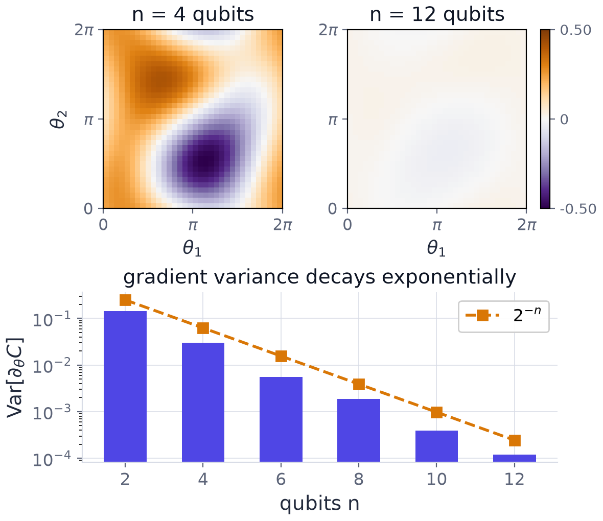

Chapter 12: Trainability, Noise and Generalisation¶
We have now built both families of quantum classifier. This chapter is the honest accounting: what actually goes wrong when these models are scaled up, and what theory says about how much data they need. It covers four obstacles in turn. Barren plateaus flatten the loss landscape exponentially in the number of qubits. Noise damages every circuit and, in its own way, flattens gradients too. Generalisation asks how many training samples a quantum model needs, and has a reassuring answer. And dequantisation and baselines ask the question that matters in the end: whether a classical algorithm could have done the same job. None of this makes quantum machine learning pointless; it tells you where its limits are, so that you choose circuits that stay inside them.
12.1 Barren plateaus¶
If \(U(\theta)\) is deep enough to form an approximate unitary 2-design, then for a global cost \(C\) (one built from an observable on all \(n\) qubits) with \(\mathbb{E}[\partial_\theta C]=0\),
This is the result of McClean and co-authors (2018) for deep 2-design ansätze; the refinement by cost locality is due to Cerezo and co-authors (2021). Here \(n\) is the number of qubits. In words:
- The landscape is exponentially flat almost everywhere. Gradients are indistinguishable from zero.
- Distinguishing such a gradient from shot noise needs \(M=\Omega(2^n)\) shots per parameter. Resolving a signal of size \(g\) needs \(M\gtrsim1/g^2\), and here \(g\sim2^{-n/2}\).
- It is a property of the ansatz and the cost, not of the optimiser. Gradient-free methods fail equally, because the cost values themselves concentrate.
- Random initialisation of a deep hardware-efficient ansatz lands in the plateau with overwhelming probability.
Why it happens (a heuristic). This is a concentration-of-measure effect for the Haar-random unitary group. For a Haar-random state in dimension \(d=2^n\) and an observable \(O\) with \(\operatorname{tr}O=0\), the standard second-moment formula gives \(\mathbb{E}\langle O\rangle^2=\operatorname{tr}(O^2)/\big(d(d+1)\big)\). For \(O=Z_1\) (or any Pauli string), \(\operatorname{tr}O^2=d\), so \(\mathbb{E}\langle O\rangle^2=1/(d+1)\approx2^{-n}\): a typical random state has an expectation value of order \(2^{-n/2}\) for every such observable. A deep random circuit samples such states, and the cost, and every one of its derivatives, is exponentially close to zero.

Example 12.1: barren plateaus and the resulting shot budget
For a deep hardware-efficient ansatz with a global cost function, \(\operatorname{Var}[\partial_\theta C]\approx2^{-n}\). Consider a circuit on \(n=30\) qubits with \(p=100\) trainable parameters.
(a) What is the typical magnitude of a partial derivative? (b) How many shots are needed to resolve it above shot noise? (c) What is the practical consequence for training?
Hint. The typical magnitude is the standard deviation \(\sigma=\sqrt{\operatorname{Var}}\), and shot noise on an expectation value falls as \(1/\sqrt M\).
Step 1, typical magnitude. \(\sigma=\sqrt{2^{-30}}=2^{-15}\approx3.05\times10^{-5}\).
Step 2, shots per derivative. Shot noise scales as \(1/\sqrt M\), so resolving a signal \(g\) requires \(M\gtrsim1/g^2=2^{30}\approx1.07\times10^9\).
Step 3, cost per iteration. With \(p=100\) parameters and two shifted circuits per parameter: \(100\times2\times1.07\times10^9\approx2\times10^{11}\) circuit executions.
Step 4, consequence. Training a deep global-cost ansatz at this width is simply not feasible; the practical responses are local cost functions, shallow or problem-inspired ansätze, layerwise training and warm starts.
Answer. (a) \(\sigma\approx3.05\times10^{-5}\); (b) \(\approx1.07\times10^9\) shots per partial derivative, i.e. \(\approx2\times10^{11}\) executions per iteration; (c) infeasible, hence local cost functions, shallow or problem-inspired ansätze, layerwise training and warm starts.
Remark. The cost is exponential in the number of qubits: adding ten qubits multiplies the shot budget by \(2^{10}\approx10^3\). This is the sobering counterweight to the previous chapter's problems, where the gradients were of order one.
12.2 Escaping the plateau¶
The good news is that plateaus have assumptions, and the assumptions can be broken. The sharpest result concerns the cost function. For global costs (observables acting on all \(n\) qubits) plateaus appear even at constant depth. For local costs, gradients vanish only polynomially, provided the depth stays \(O(\log n)\) (Cerezo and co-authors, 2021). The mitigations follow.
| Strategy | What to do |
|---|---|
| Local observables | Prefer \(\langle Z_1\rangle\) or sums of two-qubit terms over full parity readout. |
| Shallow and layerwise | Keep depth \(O(\log n)\), or train layer by layer, freezing earlier blocks. |
| Warm starts | Initialise near a classically computed or small-instance solution, not uniformly at random. |
| Identity blocks | Pair each block with its inverse at initialisation, so that \(U(\theta_0)=I\). |
Switching from parity to a local observable often recovers a usable gradient signal; this is the single most actionable finding. Be careful, though: layerwise training has its own documented failure modes as depth grows, and each remedy breaks one assumption behind the plateau result rather than being universal. Problem-inspired ansätze, which restrict the explored subspace, remain the most robust route.
12.3 Noise and error mitigation¶
Real devices are noisy in three principal ways.
- Decoherence: the relaxation and dephasing times \(T_1\) and \(T_2\) limit the usable circuit duration.
- Gate error: two-qubit infidelities of \(10^{-3}\) to \(10^{-2}\) accumulate with depth.
- Readout error: asymmetric bit-flips at measurement bias \(\langle Z\rangle\).
Noise-induced barren plateaus
Under local Pauli noise, with a damping factor \(q<1\) per layer determined by the noise strength, gradients decay as \(O(q^L)\) with depth \(L\) (Wang and co-authors, 2021). Unlike the 2-design plateau this cannot be avoided by any initialisation strategy or ansatz choice, only by shorter circuits or better hardware.
Error mitigation reduces the bias of an estimate without correcting the hardware:
- Zero-noise extrapolation (ZNE): amplify the noise by a factor \(\lambda\) (for example by gate folding, replacing a gate \(G\) by \(GG^\dagger G\)), measure \(\langle Z\rangle(\lambda)\) at several \(\lambda\), and extrapolate to \(\lambda=0\).
- Readout correction: invert the calibrated confusion matrix of the measurement.
- Probabilistic error cancellation: unbiased, but with an exponential sampling overhead.
The catch
Mitigation is not correction. It trades bias for variance, so the shot cost rises, its overhead grows with circuit size, and it cannot restore an exponentially decayed gradient. This bounds what is achievable on current devices.
12.4 Generalisation in quantum machine learning¶
You might expect a model living in a space of exponentially large dimension to need an astronomical amount of data. It does not. For a model with \(T\) trainable gates, Caro and co-authors (2022) bound the gap between the true risk \(R\) and the empirical risk \(\hat R_N\) on \(N\) samples:
The count that appears is the number of trainable gates \(T\), not the dimension \(2^n\) of the Hilbert space. Consequently \(N=\tilde O(T)\) training samples suffice: quantum models are not automatically data-hungry. Fewer parameters generalise better, which pulls in the same direction as the argument for shallow ansätze.
Three qualifications keep the result honest.
- It bounds the generalisation gap, not the achievable accuracy: a model can generalise perfectly while being uniformly wrong.
- The bound assumes noiseless evaluation.
- Over-expressive encodings still overfit. A feature map with too many independent Fourier frequencies (Chapter 5) can interpolate arbitrary labels.
Key idea
Expressivity must be controlled on both sides: in the ansatz, for trainability, and in the encoding, for generalisation.
12.5 Dequantisation and honest baselines¶
A claim of quantum advantage is only as good as the classical baseline it beat. Three lines of work show how easily classical methods catch up.
- Classical shadows estimate many observables from few randomised measurements (Huang, Kueng and Preskill, 2020), and support classical surrogate learning of quantum-model outputs (Huang and co-authors, 2021). If a classical algorithm can learn to imitate the quantum model from few samples, the hardware is redundant at inference time.
- Random Fourier features reproduce many quantum kernels to accuracy \(\varepsilon\) in time polynomial in \(1/\varepsilon\), whenever the encoding's frequency spectrum is small.
- Sampling-based dequantisation has removed claimed exponential speed-ups from several quantum linear-algebra routines (following Tang, 2019).
Consequently, a quantum model beating a weak classical baseline is no evidence at all.
Method rule
Compare against a tuned classical baseline, for example an RBF-kernel SVM, gradient boosting or a small multilayer perceptron, on identical data, splits and hyperparameter budget, and report shot counts alongside accuracy. Many early advantage claims failed precisely this test, and a negative result reported honestly is a contribution.
12.6 Summary¶
Chapter Summary
- For a deep ansatz forming an approximate 2-design and a global cost, \(\operatorname{Var}[\partial_\theta C]\sim2^{-n}\): a barren plateau. Resolving it needs \(\Omega(2^n)\) shots per parameter, and gradient-free methods fail equally.
- At \(n=30\), \(p=100\): \(\sigma\approx3.05\times10^{-5}\), about \(1.07\times10^9\) shots per derivative, about \(2\times10^{11}\) executions per iteration.
- Plateaus have assumptions: use local costs, depth \(O(\log n)\) or layerwise training, warm starts, identity blocks; problem-inspired ansätze are the most robust.
- Noise (decoherence, gate and readout errors) causes noise-induced plateaus, gradients \(O(q^L)\), which no initialisation avoids. Mitigation (ZNE, readout correction, probabilistic error cancellation) trades bias for variance and does not restore a decayed gradient.
- Generalisation depends on the number of trainable gates \(T\), not on \(2^n\): \(\lvert R-\hat R_N\rvert=O(\sqrt{T\log T/N})\). Control expressivity in the ansatz (trainability) and in the encoding (generalisation).
- Dequantisation and classical surrogates mean that a quantum model must beat a tuned classical baseline, with shot counts reported.
12.7 Exercises¶
Exercise 12.1
For \(n=20\) qubits find the typical gradient magnitude under a barren plateau and the shots needed to resolve it.
Answer
\(\sigma=\sqrt{2^{-20}}=2^{-10}\approx9.8\times10^{-4}\). Shots: \(1/\sigma^2=2^{20}\approx1.05\times10^6\) per derivative.
Exercise 12.2
By what factor does the shot budget grow when ten qubits are added to a plateau-affected circuit?
Answer
The budget scales as \(2^n\), so ten more qubits multiply it by \(2^{10}=1024\approx10^3\).
Exercise 12.3
Use the Haar second-moment formula to estimate the typical size \(\sqrt{\mathbb{E}\langle Z_1\rangle^2}\) for \(n=10\) qubits.
Answer
\(\mathbb{E}\langle Z_1\rangle^2=1/(2^{10}+1)=1/1025=9.8\times10^{-4}\), so the typical value is \(\approx0.031\): for ten qubits a random state's \(\langle Z_1\rangle\) is already within a few percent of zero.
Exercise 12.4
Under noise that damps the gradient by \(q=0.9\) per layer, by what factor is the gradient reduced after \(L=50\) layers, and after \(L=100\)?
Answer
\(0.9^{50}=5.2\times10^{-3}\) and \(0.9^{100}=2.7\times10^{-5}\). Doubling the depth squares the damping factor.
Exercise 12.5
A single-qubit readout has confusion matrix \(C=\begin{pmatrix}0.98&0.05\\0.02&0.95\end{pmatrix}\) (columns are the true outcomes \(0\) and \(1\), rows the reported ones). The measured distribution is \((0.70,0.30)\). Correct it.
Answer
\(\det C=0.98\cdot0.95-0.05\cdot0.02=0.930\) and \(C^{-1}=\frac1{0.93}\begin{pmatrix}0.95&-0.05\\-0.02&0.98\end{pmatrix}\). The corrected distribution is \(\frac1{0.93}(0.95\cdot0.70-0.05\cdot0.30,\ -0.02\cdot0.70+0.98\cdot0.30)=\frac1{0.93}(0.650,\ 0.280)=(0.699,\ 0.301)\), which sums to \(1\).
Exercise 12.6
With noise amplified by \(\lambda=1\) and \(\lambda=2\) a circuit gives \(\langle Z\rangle=0.60\) and \(0.45\). Extrapolate linearly to \(\lambda=0\). Why does ZNE raise the number of shots needed?
Answer
The line through \((1,0.60)\) and \((2,0.45)\) has slope \(-0.15\), so the value at \(\lambda=0\) is \(0.60+0.15=0.75\). Extrapolation multiplies the statistical errors of the noisy measurements by coefficients larger than \(1\) (here \(2\) and \(-1\) on the two points), so the estimate has a larger variance and needs more shots for the same accuracy: bias is traded for variance.
Exercise 12.7
Why would a gradient-free optimiser not escape a barren plateau?
Answer
In a plateau the cost values themselves, not only their derivatives, concentrate exponentially close to a constant for almost all parameter settings. A gradient-free method compares cost values, and they are indistinguishable from shot noise, so it has no signal to follow.
Exercise 12.8
By roughly what factor does the generalisation bound improve if the number of trainable gates is halved, at fixed \(N\)?
Answer
The bound scales as \(\sqrt{T\log T}\), so halving \(T\) reduces it by a factor a little over \(\sqrt2\approx1.41\) (a little more because of the logarithm).
Exercise 12.9
Which readout would you choose for a deep circuit on \(40\) qubits, \(\langle Z_1\rangle\) or \(\langle Z_1\cdots Z_{40}\rangle\), and why?
Answer
\(\langle Z_1\rangle\). The parity readout is a global observable, which brings barren plateaus even at constant depth; a local observable keeps gradients decaying only polynomially while the depth is \(O(\log n)\).